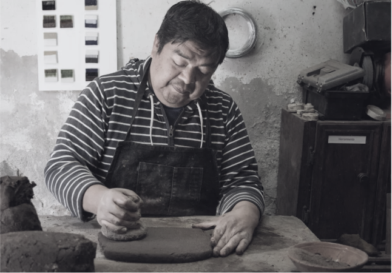

Mariano Hernández
Maestra del barro negro de San Bartolo Coyotepec. Cada pieza se bruñe a mano para lograr su característico brillo profundo.
Maestra del barro negro de San Bartolo Coyotepec. Cada pieza se bruñe a mano para lograr su característico brillo profundo.

Tallador de alebrijes en San Martín Tilcajete que combina pigmentos naturales con diseños contemporáneos.
Artesana textil de Teotitlán del Valle. Teje en telar de cintura tapices que narran historias de su comunidad.
Ceramista de Santa María Atzompa especializado en esmaltes plúmbicos libres y formas orgánicas inspiradas en la naturaleza.
Joyera de filigrana en plata de Oaxaca de Juárez. Sus piezas minuciosas preservan técnicas familiares centenarias.